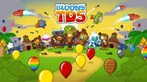
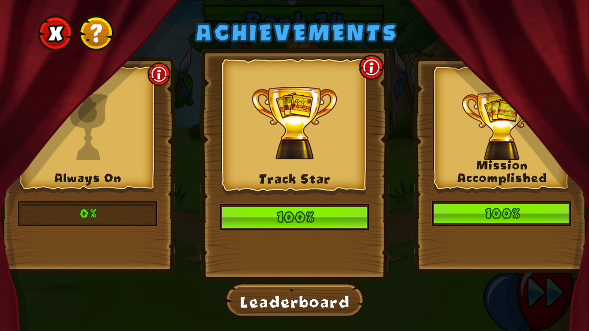
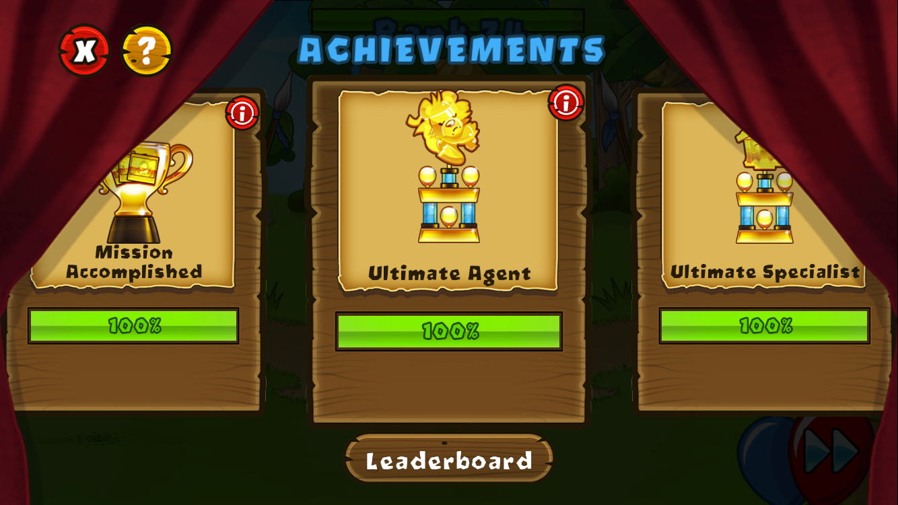
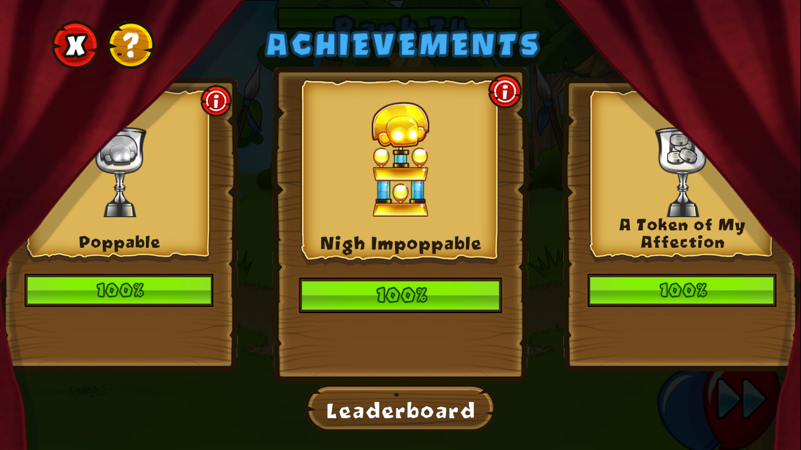
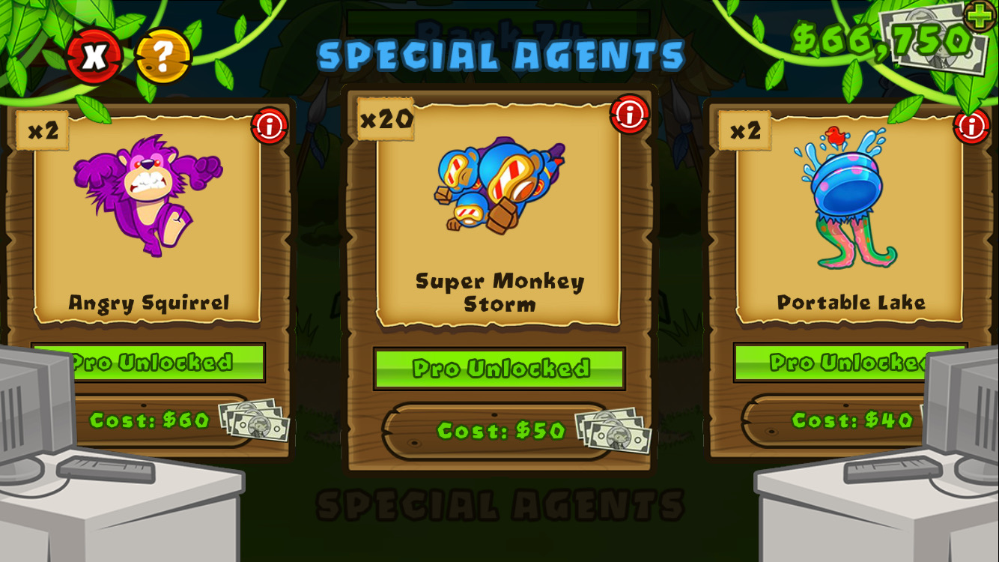
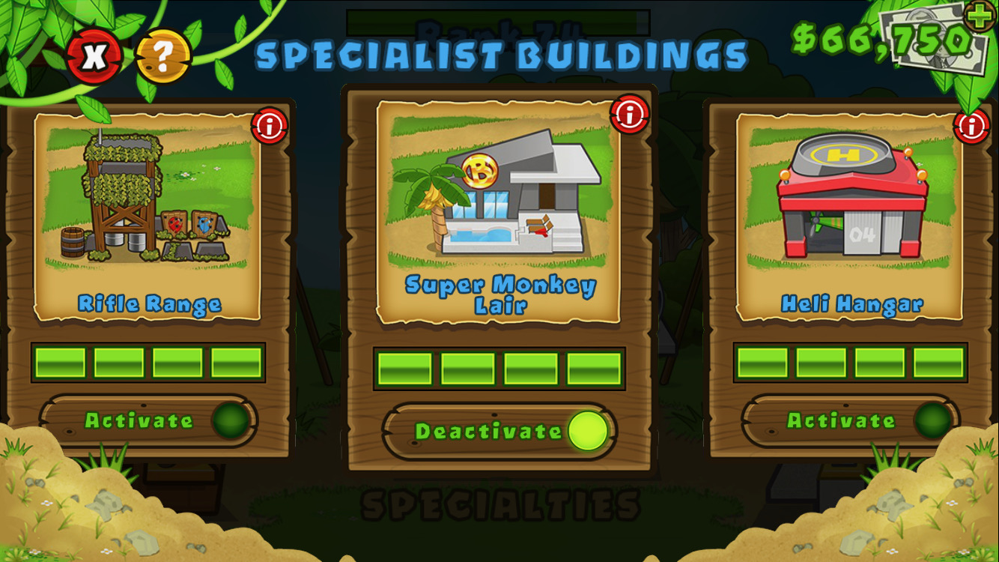
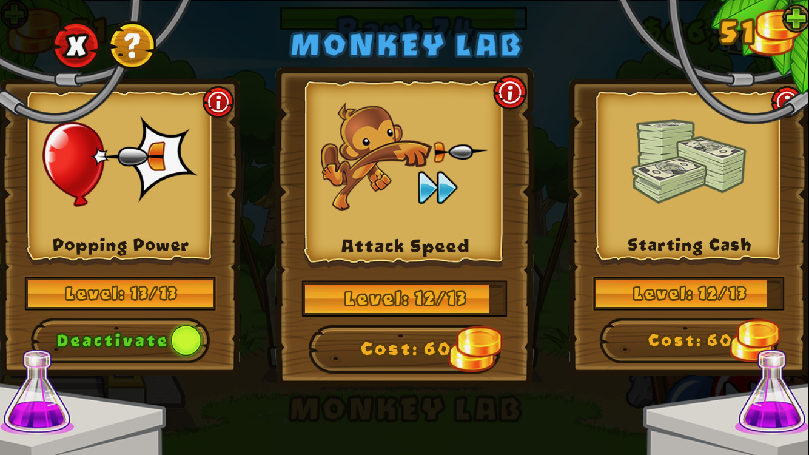
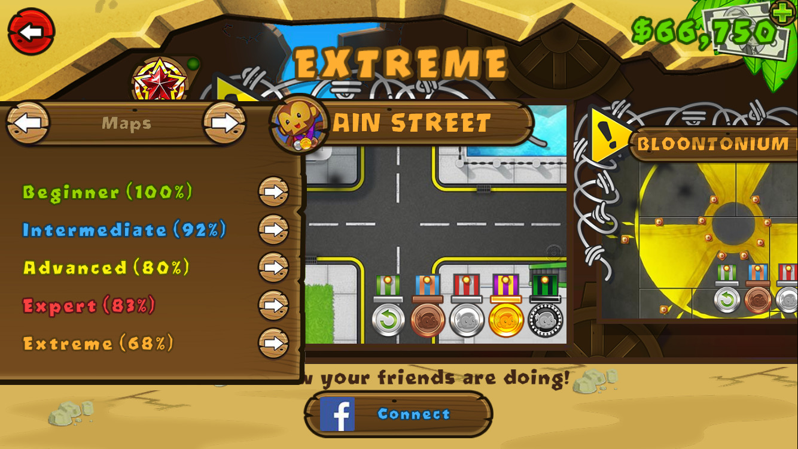

BTD 5
What is Bloons Tower Defense 5 (BTD5)?
Google it here
Gallery
Here's an image of what I was doing at the end of the summer. I got to round 202 and eventually stopped playing because I had lost interest and also because I was starting to hit a bit of a hardware limitation.
Here's an image showing a couple achievements, including track star, which is to beat every launch map at every difficulty, and mission accomplished, which is to beat every special mission.
Here's an image showing a couple more achievements, including ultimate agent, which is to get every special agent to pro, and ultimate specialist, which is to get every specialist building.
Here's an image showing a few more achievements, most notably Nigh Impoppable, which is earned by defeating 25 maps on Impoppable difficulty.
Here's an image showing a few of the special agents I got. It took a decent amount of time to earn all of the money to buy enough agents and then actually go and place all 50 agents to get them to pro status.
Here's an image showing a few of the specialist buildings I have. It took a long time to get the money to get all of them (and even more time to get the surplus money that I can't spend).
Here's an image showing a few of the lab upgrades I have. It took a long time to get the upgrades I have right now, and I'm still not even close to fully upgrading everything.
Here's an image showing the percentage of the medals I have for each map difficulty.